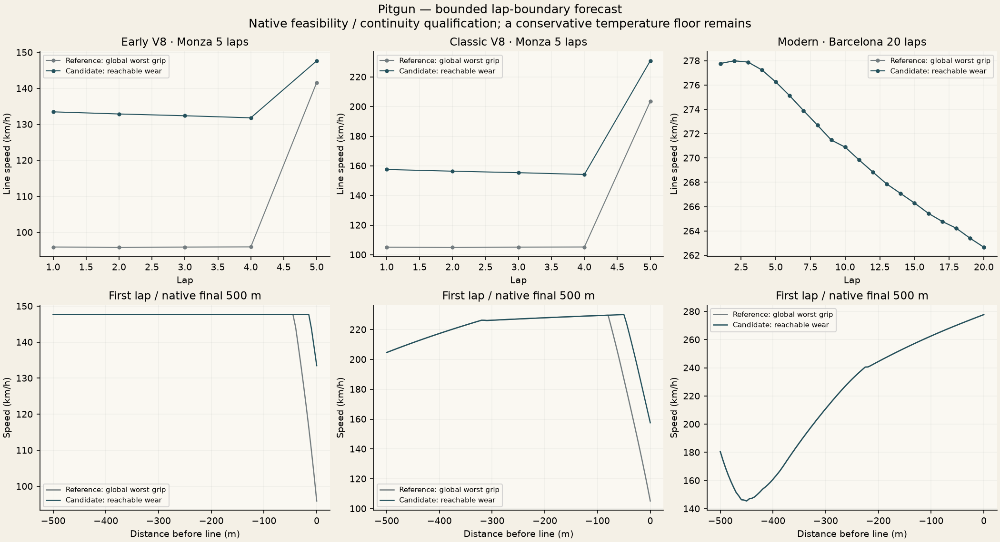
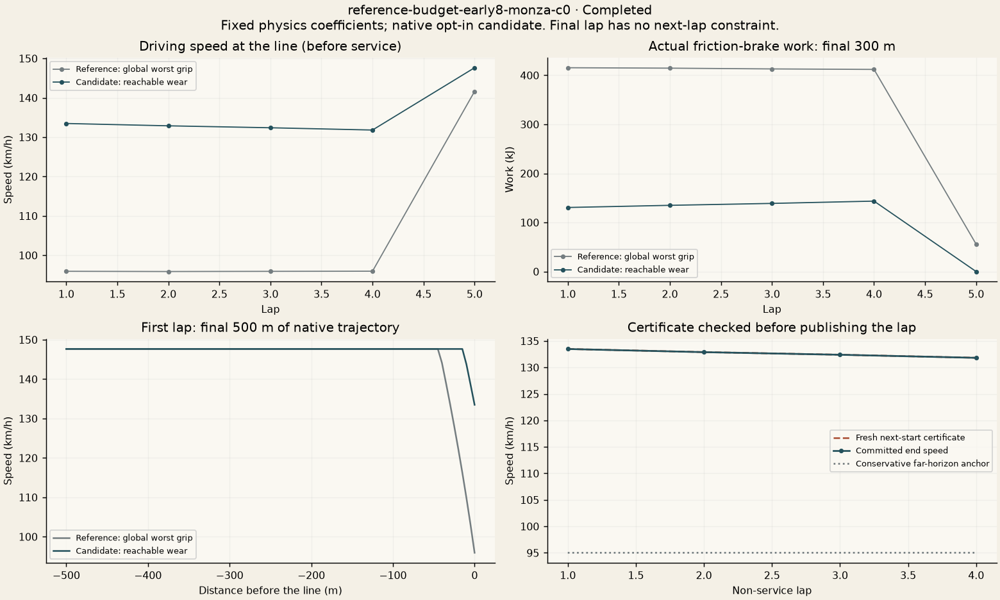

Pitgun · Lap-boundary qualification
Native experimental candidate. No game activation. Future wear is bounded from the actual tire state. End speed is checked against a fresh braking certificate before the current lap is published. Native speed and thermal state carry exactly; accepted history is never rewritten.

Inspect a recorded scenario

The final lap has no next-lap horizon; a different finish-line speed is not by itself evidence of a bug. The candidate still uses a conservative thermal-grip floor. Pit lane motion remains an abstract, ledger-accounted reset. Surface, carcass and wear enclosures are checked on native points, not on these selected graphical excerpts.
Matched inputs, different forecast algorithms
Totals include the declared pit service. Time differences are model-trajectory changes, not proof of real-world accuracy or a pure compute optimization. “Exact carry” compares speed/engine/surface/carcass/wear to the actual post-service state. Fallbacks recompute only uncommitted work; they do not clip speed.
Method and assumptions · Results and limitations · Frozen receipt
Source 0efdfa3b128498beb903b069973523e1d3fecf09. This page reads recorded native data; it does not execute the candidate in your browser.